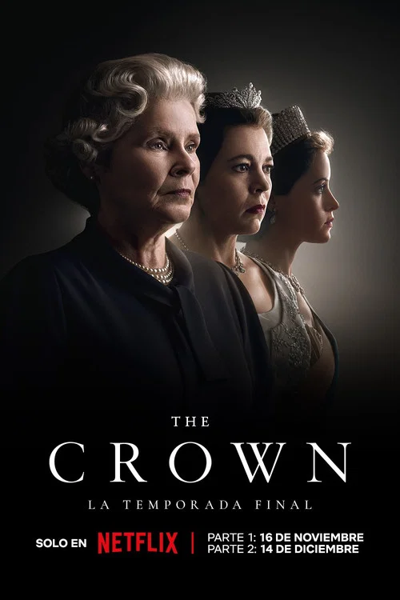

Películas
- Inception - Ciencia Ficción

Una película que desafía la realidad y la mente, dirigida por Christopher Nolan. Con un elenco estelar y efectos visuales impresionantes, Inception es una obra maestra del cine moderno.
Ver más
Inception es una joya del cine que desafía la percepción de la realidad. La dirección de Nolan es impecable, con giros que mantienen al espectador enganchado hasta el final. Solo le resta un punto por la complejidad que puede confundir a algunos.
- Batman el caballero de la noche - Acción

Una película de superhéroe que explora la oscuridad y la venganza, dirigida por Christopher Nolan. Con un elenco talentoso y efectos visuales impresionantes, Batman Begins es una obra maestra del cine moderno.
Ver más
Una obra maestra absoluta. Christian Bale como Batman es icónico, y la exploración de la psicología del héroe es profunda. Nolan eleva el género de superhéroes a niveles artísticos. Perfecta en todos los aspectos.
- Pulp Fiction - Crimen

Una película de crimen que explora la vida en Los Ángeles, dirigida por Quentin Tarantino. Con un elenco talentoso y diálogos memorables, Pulp Fiction es una obra maestra del cine moderno.
Ver más
Tarantino en su mejor forma con diálogos ingeniosos y una narrativa no lineal que mantiene la intriga. El reparto es excepcional, especialmente Travolta y Jackson. Le resta puntos por algunos momentos de violencia gráfica innecesaria.
- Interstellar - Ciencia Ficción

Una película de ciencia ficción que explora el espacio y el tiempo, dirigida por Christopher Nolan. Con un elenco estelar y efectos visuales impresionantes, Interstellar es una obra maestra del cine moderno.
Ver más
Una epopeya espacial que combina ciencia y emoción de manera magistral. Hans Zimmer's soundtrack es inolvidable, y la exploración de temas como el amor y el sacrificio es profunda. Solo un punto menos por algunos agujeros científicos.
Series
- Breaking Bad - Drama

Una serie que explora la vida de un profesor de química convertido en fabricante de metanfetamina, dirigida por Vince Gilligan. Con un elenco talentoso y una narrativa intensa, Breaking Bad es una obra maestra de la televisión moderna.
Ver más
La transformación de Walter White es fascinante y aterradora. Bryan Cranston da una actuación magistral, y la serie explora temas morales con profundidad. Cada episodio es un cliffhanger perfecto. Absolutamente imprescindible.
- Stranger Things - Ciencia Ficción

Una serie de ciencia ficción que explora el mundo sobrenatural en una pequeña ciudad de los años 80, dirigida por los hermanos Duffer. Con un elenco talentoso y efectos visuales impresionantes, Stranger Things es una obra maestra de la televisión moderna.
Ver más
Un tributo perfecto a los años 80 con elementos de horror y aventura. Los niños actores son encantadores, y la atmósfera es inmersiva. Le resta un punto por algunas tramas secundarias que se sienten forzadas en temporadas posteriores.
- The Crown - Drama Histórico

Una serie que explora la vida de la reina Isabel II y su reinado, dirigida por Stephen Daldry. Con un elenco talentoso y una narrativa intensa, The Crown es una obra maestra de la televisión moderna.
Ver más
Una mirada fascinante a la monarquía británica. Claire Foy y Olivia Colman brillan como la Reina. La producción es lujosa, pero algunos eventos históricos se sienten dramatizados excesivamente, restando autenticidad.
- Dark - Misterio

Una serie de misterio que explora los secretos oscuros de una pequeña ciudad alemana, dirigida por los hermanos Duffer. Con un elenco talentoso y una narrativa intensa, Dark es una obra maestra de la televisión moderna.
Ver más
Un laberinto temporal complejo y adictivo. La serie juega con conceptos de física cuántica de manera inteligente, creando una narrativa que te mantiene adivinando. Solo un punto menos por la confusión inicial que puede desanimar a algunos espectadores.